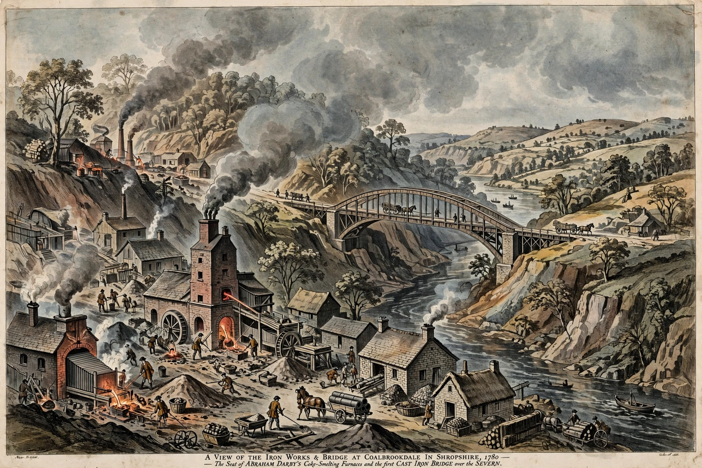

Abraham Darby I

| Born | 14 April 1678, Wrens Nest, Worcestershire, England |
|---|---|
| Died | 8 March 1717 (aged 38), Madeley, Shropshire |
| Occupation | Ironmaster |
| Known for | Smelting iron with coke |
Abraham Darby (14 April 1678 – 8 March 1717), known as Abraham Darby I, was an English ironmaster and foundryman who was the first of four generations of the Darby family to play a central role in the Industrial Revolution. In 1709, at Coalbrookdale in Shropshire, he successfully smelted iron ore using coke rather than charcoal, a breakthrough that freed iron production from dependence on dwindling timber supplies and greatly cheapened cast iron.
Early life and career
Darby was born near Dudley, the son of a Quaker farmer and locksmith. He was apprenticed to a malt-mill maker in Birmingham, then moved to Bristol, where he worked in brass founding and patented a method of casting iron pots in sand moulds, producing thin, cheap cooking pots. In 1708 he leased the disused furnace at Coalbrookdale in the Ironbridge Gorge.
Coke smelting
In 1709 Darby smelted iron with coke made from local coal. Coke-smelted iron at first suited only castings, but his son Abraham Darby II improved the process so that it could be converted into bar iron in the forge. The Darby works at Coalbrookdale became the cradle of iron-based industrialisation; Darby's grandson, Abraham Darby III, built the famous Iron Bridge over the River Severn in 1779.
Death and legacy
Darby died in 1717, aged 38, and was buried in the Quaker burial ground at Coalbrookdale. His coke-smelting innovation is widely regarded as one of the foundational advances of the Industrial Revolution.